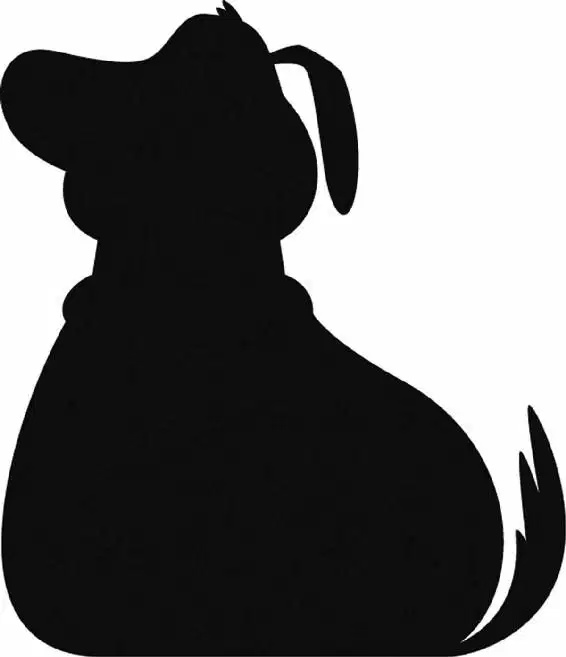

Carl tossed everything out of the house. Chairs, tables, dressers, dishes, shoes, hats, pictures in frames. The house rose a little, then some more.
Carl shoved the refrigerator off the porch.
Whoosh! Carl let out a whoop as the house took off into the air. Below, all his and Ellie’s belongings lay strewn across the ground— including the couple’s favorite comfy chairs, which now sat side by side, once again, at the top of Paradise Falls.
He rushed to the steering rig. He adjusted his direction and scanned the sky.
Knock, knock!
“Russell?” Carl cried. The door swung open, but Russell wasn’t there. Instead, Carl saw a big-eyed golden retriever. “Dug!”
“I was hiding under your porch because I love you,” Dug explained. “Can I stay?”
“Can you stay?” Carl cried, his heart soaring. “Well, you’re my dog, aren’t you? And I’m your master!”
“You are my master?” Dug barked and his tail wagged crazily. He lunged forward, licking Carl’s face. “Oh, boy! Oh, boy!”
“Good boy, Dug. You’re a good boy, Dug.” Carl laughed and patted the dog.
Now all they had to do was find Russell.
Russell was on board the Spirit of Adventure. Muntz’s dogs were tying him to a chair. He’d tried to sneak on board using his leaf blower, but the dogs had discovered him.
“Where’s your elderly friend?” Muntz demanded angrily.
Russell’s face clouded. “He’s not my friend anymore.” Russell turned on the leaf blower and blasted Muntz in the face.
Muntz grabbed the leaf blower and tossed it aside. “If you’re here,” Muntz said, “Fredricksen can’t be far behind.” He grabbed Russell and dragged him toward the map room.
“Let me go!” Russell shouted. “Where are you keeping Kevin?”
Beta snarled as he leaned close to Russell. “Scream all you want, small mailman.”
“None of your mailman friends can hear you,” Gamma added.
Muntz looked out the porthole. A house was sailing directly toward the blimp! “Alpha!” Muntz shouted. “Fredricksen’s coming back. Guard that bird. If you see the old man, kill him.” He flipped a switch and walked out of the room.
The floor below Russell started to lower. He was on the ramp!
Muntz headed for the cockpit and took the wheel. The house had disappeared. “Where are you, Fredricksen?” he snarled.
Muntz didn’t know that the house was behind him. From his porch, Carl could see that Russell was on the ramp, tied to a chair. Carl put on Russell’s sash and then noticed that Russell was starting to slide toward the edge.
Carl steered his house closer to the blimp. He hooked his cane to the garden hose and zipped over to Russell. Just as Russell was about to slide off the ramp, Carl reached out and caught the back of Russell’s chair. He scooped him to safety at the edge of the ramp.
“Dug!” Carl cried. “Bring her over!”
“Mr. Fredricksen!” Russell cried. “You came back for Kevin! Let’s go get her.”
“I don’t want your help,” Carl announced. “I want you safe.” He and Dug set Russell down in the living room, where he’d be safe. Then they went back for Kevin.
The whole airship was being patrolled by Muntz’s dogs. Dug and Carl sneaked through an air duct until they found the bird. She was locked in a giant cage, guarded by more fierce dogs.
“What do we do now, Dug?” Carl whispered, peeping down from the air vent in the ceiling.
But Dug didn’t answer. He was too busy chomping on one of the tennis balls at the end of Carl’s cane.
Tennis ball … , Carl thought.
He lowered himself onto the top of Kevin’s cage and raised a tennis ball over his head. “Who wants the ball?” he shouted.
“Me!” The dogs hopped around in excitement. “I do! I want the ball!”
“Then go get it!” Carl tossed the ball out the door.
The dogs raced after it, shouting, “I got it!”
Carl slammed the door behind them. The dogs were locked out. Then he turned to Kevin. “Let’s get you out of here,” he said.
Meanwhile, back at the house, Russell was still struggling with the ropes that held him to the chair. Finally, he wriggled free! Unfortunately, at that moment his chair tipped out onto the porch … and over the edge.
Russell screamed as he and his chair dropped from the porch. He grasped at the garden hose, which unspooled from its caddy. The chair fell away, and Russell clung to the hose.
The wind pushed the house back toward Muntz’s ship.
“Does anyone know where they are?” Muntz demanded inside the cockpit. His dogs were barking and talking madly. He could hardly understand a word.
Just then, Russell slid, squeaking, across the cockpit’s window, dangling by the end of the garden hose. “Whoa!”
Muntz and Alpha gaped at him. Muntz spoke into the radio. “Gray Leader,” he commanded, “take down the house!”
Seconds later, an airplane zoomed from the bottom of the blimp.
“Aaaaah! Ahh!” Russell yelled as another and then another plane joined the attack.
Muntz’s dogs were the pilots!
The planes fired at the house, narrowly missing Russell.
“Aaaaah!” Russell screamed.
The planes turned to make another pass at the house. Russell struggled to climb the hose.
But Russell was on his own. If he was going to get back into the house, he was going to have to do it all by himself.
“Come on, Kevin,” Carl urged. He, Dug, and the bird crept through the trophy room, looking for a way out of the airship. At that moment, Muntz emerged from the shadows. He had a sword raised over his head.
Barking, Dug lunged at Muntz and bit his leg! Muntz kicked Dug out the door and slammed it shut. Dug barked at the closed door. Suddenly, Dug heard growling. He turned slowly.
Alpha and the rest of the pack were right behind him.
“Hi,” Dug said to the snarling pack.
Inside the trophy room, Muntz lifted his sword with a growl. Carl raised his cane to defend himself.
Muntz slashed at Carl, but his sword hit a pillar instead and stuck there. Carl swung his cane and missed.
Muntz pulled his sword free. He knocked Carl to the floor. “Any last words, Fredricksen? Come on, spit it out!”
That gave Carl an idea. He spat his false teeth in Muntz’s face. Muntz stumbled backward, giving Carl just enough time to recover.
Carl put his teeth back in as Muntz went on the attack. “I’m taking that bird back with me alive or dead!” Muntz yelled. He swung the sword at Carl.
Just then, in the cockpit, the dogs knocked Dug against the controls. The ship tilted, and Muntz stumbled. Carl saw his chance to escape.
“Come on, Kevin!” he cried. Carl and Kevin darted out the window. They started to climb a ladder on the side of the airship. Muntz was right behind them.
Meanwhile, back in the cockpit, Alpha faced off against Dug. “I will enjoy the killing of you now, Dug,” Alpha snarled.
Dug looked around, desperate. The only thing within reach was a lamp. As Alpha lunged, Dug grabbed the lampshade and thrust it over Alpha’s head, knocking loose one of the knobs on his collar.
The rest of the pack stopped and stared at him. “He wears the Cone of Shame!” said one of the pack.
Horrified, Alpha realized that the lampshade looked just like the hideous funnel he had made Dug wear as punishment. “Huh? What?” he cried, his voice once again high-pitched and squeaky. “Do not just continue sitting! Attack!”
But the dogs only laughed at him.
“Sit!” Dug commanded.
Alpha sat. The other dogs were so surprised, they sat, too. They waited for Dug’s next command.
Dug was delighted. For the first time, he was the leader of the pack!
But Dug’s friends were still in trouble. Outside, Russell was trying to climb the hose. His hands were about to give out. “I can’t do it.”
“Russell!” Carl shouted.
Russell caught sight of Carl and Kevin climbing the side of the airship.
“Caw-caw, rarr! Caw-caw, rarr!” Carl called.
The Wilderness Explorer call set Russell’s blood on fire! “You leave Mr. Fredricksen alone!” he shouted at Muntz. Russell wasn’t about to let a fellow Explorer down! Hand over hand, he hauled himself up to the house. He ignored the planes as they dove toward him. Russell had only one goal— to save Carl and Kevin.
A plane closed in just as Russell pulled himself onto the porch.
Russell pointed down. “Hey!” he shouted. “Squirrel!”
“Squirrel!” cried the squadron leader. “Where’s the squirrel?”
“Squirrel! Where’s the squirrel?” shouted the other pilots. Their planes zoomed madly as they looked around, desperate to find the squirrel.
The planes slammed into each other! The dog pilots ejected and their parachutes unfurled. They dropped safely toward the ground. A dog pilot named Omega shook his head. “I hate squirrels.”
On the side of the blimp, Muntz had grabbed Carl’s leg. Carl kicked him off. Muntz fell partway down the ladder but managed to grab a rung at the last minute.
Finally, Carl and Kevin reached the top of the blimp. Dug joined them.
“Russell!” Carl waved his arms at the house. “Over here!”
Russell steered the house toward his friends. Carl heaved Kevin onto the porch.
“Come on, Kevin!” Carl laughed.
As the house started to rise, Carl held tight to Dug and jumped up onto the porch. They’d made it!
But then Muntz appeared. He was standing on top of the airship holding a rifle. Boom! One of his bullets ripped through the balloon strings, sending half of the balloons floating into the sky. The house plunged and hit the top of the airship. Carl tumbled out.
Just then, the house started to slide off the airship. It was going to fall! Carl grabbed the end of the hose, trying to stop it.
“Russell! Get out of there!” Carl yelled.
Russell, Dug, and Kevin ran out to the porch. But Muntz fired another shot, forcing them to duck back into the house.
“Leave them alone!” Carl yelled as Muntz ran toward the house.
Muntz climbed onto the porch. The house tipped forward. Carl tightened his grip. Muntz banged on the front door with his rifle. Carl knew he had to do something.
Suddenly, he had an idea!
“Russell!” he shouted. “Hang on to Kevin! Don’t let go of him!”
Russell didn’t understand, but he did as he was told. Both Russell and Dug held on tight to Kevin and braced themselves.
Muntz burst through the front door. He raised his rifle.
Outside, Carl pulled a chocolate bar from his pocket. “Kevin!” he cried, waving the candy. “Chocolate!”
Kevin streaked toward the chocolate. She blasted through the front window, hauling Russell and Dug with her.
Muntz scrambled after the bird. As he leaped after her, his foot got caught on a bunch of balloons and he drifted away.
Carl had done it—he’d saved his friends! But he hadn’t managed to save his house. Carl watched as it disappeared into the clouds. Ellie’s clubhouse was gone forever.
“Sorry about your house, Mr. Fredricksen,” Russell said sadly.
For a moment, Carl didn’t speak. He wasn’t nearly as upset as he’d thought he’d be. He had thought that the house, with all its reminders, was keeping Ellie near him. But now he realized something. Ellie wasn’t in the house.
Ellie was in his heart.
“You know,” Carl said, “it’s just a house.”
He turned toward Dug, Kevin, and Russell.
They’re more than friends, Carl thought.
They’re family.
And speaking of family …
